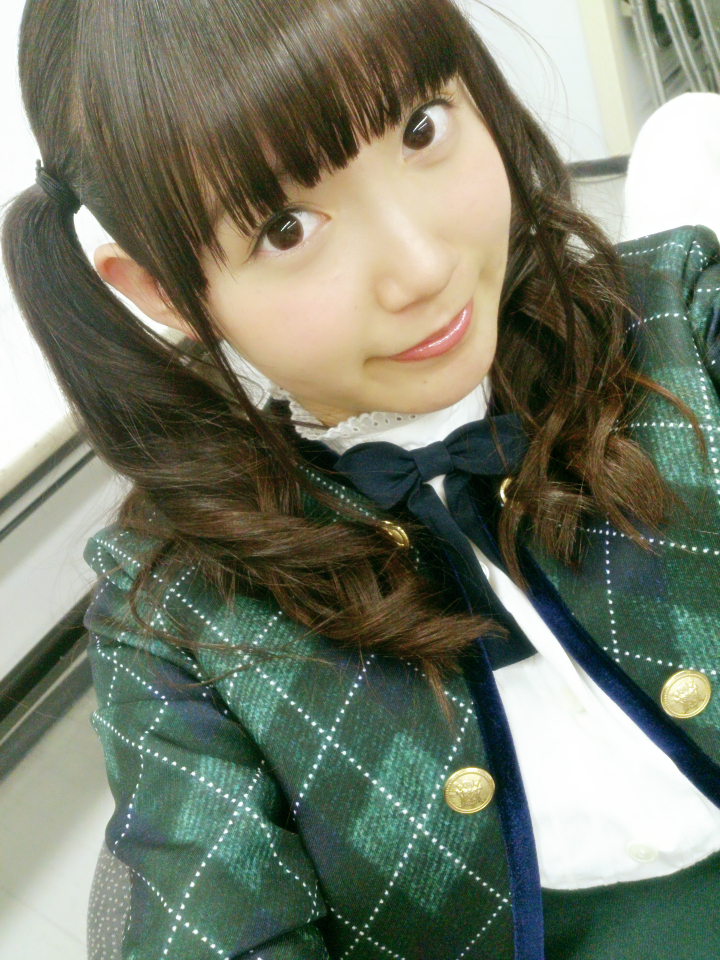
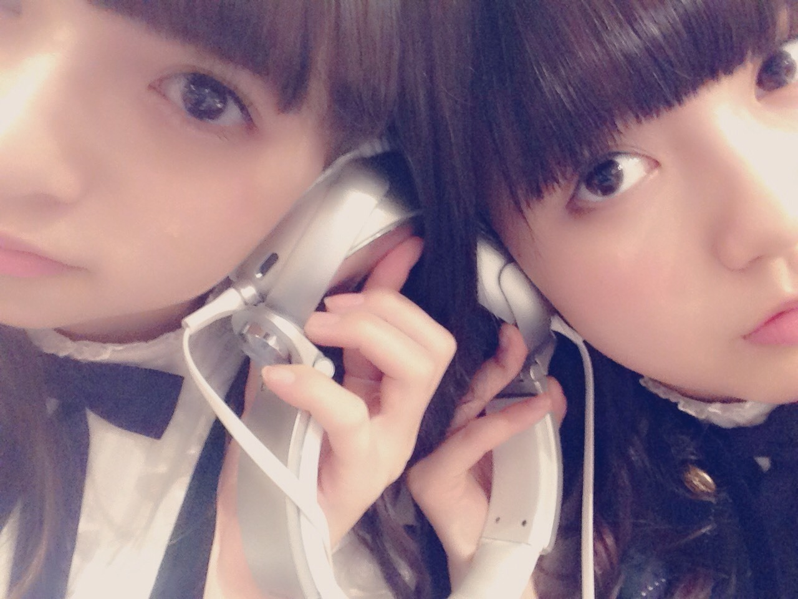

| 2014/12 20 Sat | ひめたん-OoO-その506 |

次回 生ドル初登場！
らりん、玲香も一緒です( ^o^ )♡
12/22 16:00~
「ニコぶくろスタジオ」から
公開生放送！
ぜひ遊びに来てくださいね\❁/
コメントもたくさん
待ってます～
そしてこの前は
10福チェーン"運命の推しメン会議"が
ニコ生でありました～
日記とかで事前に告知できなくて
ごめんね( >_< )
観てくださったみなさんありがとう！
ひめたんはキャラアニさんの
お手伝いをすることになりました！
キャラアニさんのほうで
アルバムを購入された方には
1/6のお渡し会で
橋本、和田、かりん、中元が
待ってますよ～＊
明日は
MUSIC FOR ALL,ALL FOR ONE 2014
に出演します(﹡ˆoˆ﹡)
去年はバレッタ選抜としてでしたが、
今年はアンダーメンバーも
呼んでいただきました！
ライブ楽しみ～♪

わーこのあすかりん
あかちゃんみたい(∗ ˊωˋ ∗)

ヘッドホンの音でさえも
共有しちゃう私たち格差社会。

 ひめたんは3日間で
ひめたんは3日間で
一番思い出に残ってる事はなに？
うーん何だろう
ステージ以外のお話ってんなら
アンダーライブのあとで
ゆみ姉がメールくれたことかな～＊
年末の握手会で初めて
ひめたんのところに行くんだけど
何話せばひめたんと仲良くなれる～？
わーありがとう♡
何でも嬉しいけれど、最初なら
自己紹介とか、
乃木坂好きになったきっかけとか
教えてほしいなあ(＊´ω`＊)
ちなみに今ひめたんすくふぇすランク
どれくらいですか？？？
もうすぐ100いきます\( ˆoˆ )/
一回リセットになって今2代目なんだけど
それにしてはなかなか頑張ってる♡
ただリセットしてから一回も
UR引いてない( ´•̥ω•̥` )
ひめたんはお好み焼きとか焼きそばを
おかずにご飯食べれるタイプ？
あーキツいねー
広島のお好み焼きは
焼きそば入ってボリューミーだから
おかずなんてもんじゃない:(´◦ω◦｀):
ひめたんの日記の
コメント欄下２ケタに46を踏んだ方へ
手書きでコメ返するコーナー
＼ ひめたん46 ／

ねーインク( ´•̥ω•̥` )
いつもたくさんのコメント
ありがとうございます
ライブの感想たくさん！
中元委員長とロマンスのスタートが
好評で嬉しいです( ^o^ )
クリスマスメドレーで
さゆとふたりで歌ったのも
みんな喜んでくれた♡
そう、かりんちゃんの755で
気づいたんだけど
前回私が載せた写メの
かりんちゃん蘭世ちゃん
目閉じてたね( >_< )ごめんね～
そろそろ秋アニメが
最終回を迎える時期ね(´；_；｀)
アカメとか録画してるんだけど
寂しいからまだ観てないの～
テラフォーマーズも終わっちゃった。
スクフェスは
にこちゃんイベ始まったね！
前回の真姫ちゃんは
ライブと重なってて忙しくて
ゲットできなかったよ(´；_；｀)
(＊´・ω・＊)
コメント(775)
2014/12/20 23:36